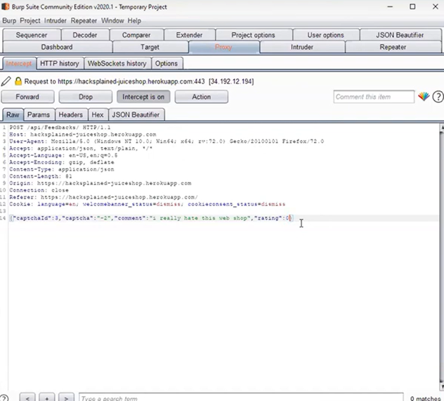
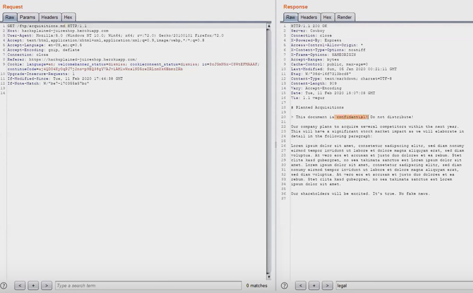
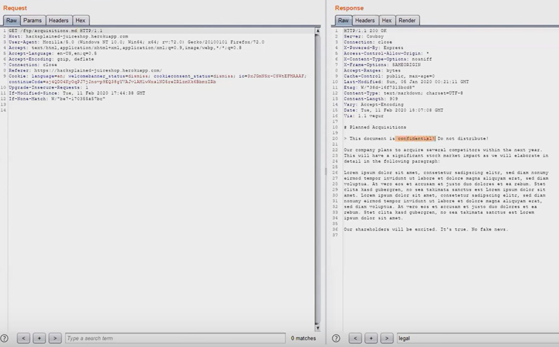
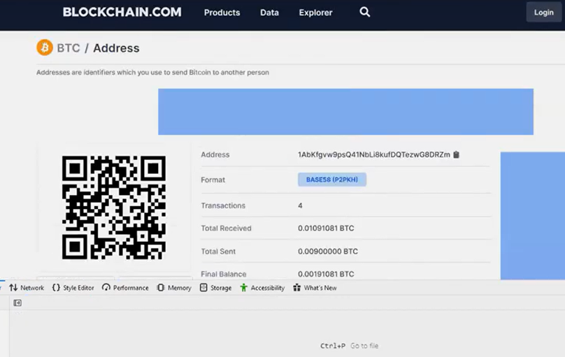
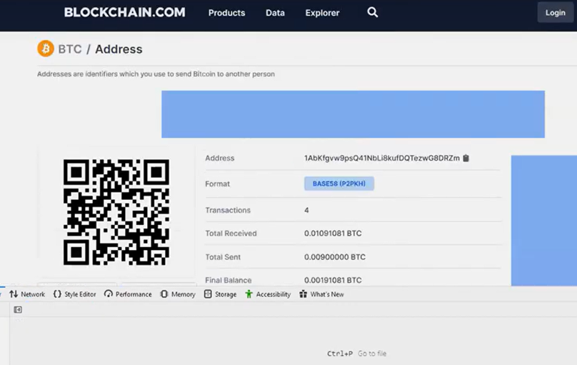
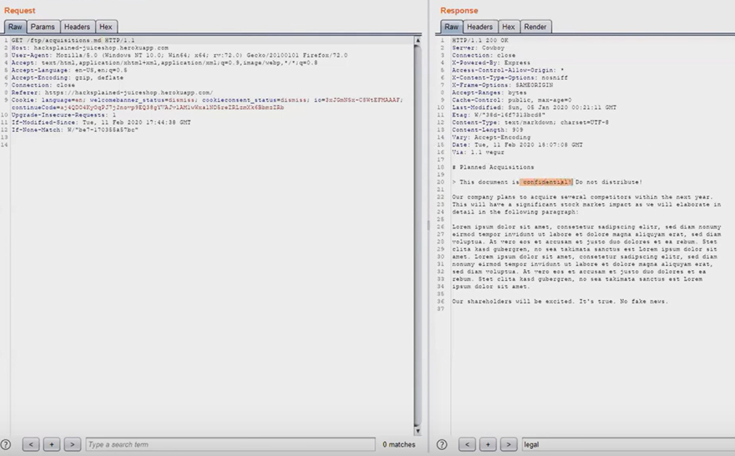
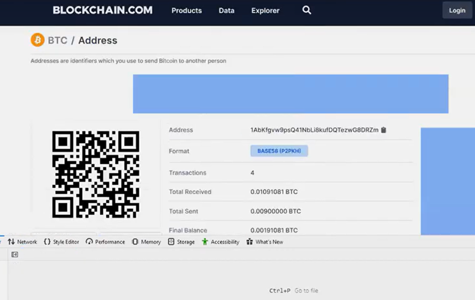

BR
OWASP Juice Shop — CTF Writeups
ITT-340 Final Report Guidelines
Title: ITT-340 Pen Testing Report — Author: Brady Reid
Versioning Control
| Version | Date | Author | Changes |
|---|---|---|---|
| 1 | 12/15/2024 | Brady Reid | Improper Input Validation (Zero Stars) |
| 1.2 | 12/15/2024 | Brady Reid | Confidential Document Exposure |
| 1.3 | 12/15/2024 | Brady Reid | DOM XSS |
| 1.4 | 12/15/2024 | Brady Reid | Error Handling |
| 1.5 | 12/15/2024 | Brady Reid | Missing Encoding |
| 2.0 | 12/15/2024 | Brady Reid | Outdated Whitelist |
| 2.3 | 12/15/2024 | Brady Reid | Repetitive Registration |
| 2.4 | 12/15/2024 | Brady Reid | Login Admin (Injection) |
| 2.5 | 12/15/2024 | Brady Reid | Classic Stored XSS |
Solving Improper Input Validation (Zero Stars)
Objective: Exploit insufficient input validation to submit a zero-star rating.
Outcome: The app accepted a 0 rating — confirms server or client validation gaps.
Outcome: The app accepted a 0 rating — confirms server or client validation gaps.
Root cause
Client-side validation was insufficient and server did not enforce strict bounds for rating values; malformed/abnormal inputs bypassed checks.
Recommendations
- Enforce server-side validation and strict input schemas (e.g., JSON schema, parameter validation).
- Apply client-side validation only for UX — do not rely on it for security.
- Reject values outside the acceptable range and return clear error responses.
Confidential Document Exposure
Objective: Access private files (for example backup.sql) via misconfigured endpoints or directory listings.
Outcome: Sensitive files were accessible due to weak access controls.
Outcome: Sensitive files were accessible due to weak access controls.
Recommendations
- Remove unnecessary files from public directories; store backups off web root.
- Disable directory listing on web servers (e.g., Apache/Nginx).
- Use least privilege for file permissions and protect sensitive endpoints with auth.
DOM XSS
Objective: Execute malicious JavaScript via DOM manipulation.
Outcome: Payloads executed when untrusted data was inserted into the DOM without sanitization.
Outcome: Payloads executed when untrusted data was inserted into the DOM without sanitization.
Mitigations
- Sanitize untrusted content with a vetted library (e.g., DOMPurify) before inserting into DOM.
- Avoid dangerous APIs such as
innerHTML,document.write, andeval. - Implement Content Security Policy (CSP) to limit script execution sources.
Error Handling (Security Misconfiguration)
Objective: Trigger errors that reveal stack traces or server internals.
Outcome: Detailed stack traces and file paths were exposed in responses.
Outcome: Detailed stack traces and file paths were exposed in responses.
Recommendations
- Disable stack traces and verbose error messages in production.
- Log detailed errors in a secure system (SIEM) and surface user-friendly generic messages to clients.
- Sanitize outputs and ensure no sensitive server data is leaked.
Missing Encoding
Objective: Bypass protections by injecting special characters when input is not properly encoded.
Outcome: Special characters allowed payload delivery in contexts where encoding was expected.
Outcome: Special characters allowed payload delivery in contexts where encoding was expected.
Recommendations
- Encode output for the appropriate context (HTML, attribute, URL, JS).
- Use framework helpers that apply context-appropriate encoding automatically.
- Enforce input sanitation and canonicalization on server side.
Outdated Whitelist (Unvalidated Redirects)
Objective: Bypass redirect whitelist to forward users to external malicious sites.
Outcome: Redirects to unauthorized URLs were possible due to outdated or weak whitelist validation.
Outcome: Redirects to unauthorized URLs were possible due to outdated or weak whitelist validation.
Recommendations
- Maintain a strict whitelist of allowed internal paths; validate at server side.
- Prefer relative paths and avoid direct use of user-supplied URLs in redirects.
- Reject or canonicalize redirect parameters and alert on unusual destinations.
Privacy Policy
Objective: Locate and review the Privacy Policy page to verify disclosure and compliance. Outcome: Policy was accessible; ensure it stays current.
- Keep policy reachable, understandable and updated to match data practices.
- Provide opt-out/consent mechanisms where required.
Repetitive Registration
Objective: Create duplicate accounts by bypassing validation.
Outcome: Duplicate accounts were creatable due to weak uniqueness checks.
Outcome: Duplicate accounts were creatable due to weak uniqueness checks.
Recommendations
- Enforce unique constraints at DB level (unique indexes) for email/username.
- Normalize input (case, whitespace) before uniqueness checks.
- Rate-limit registration endpoints to reduce abuse.
Login Admin (Injection)
Objective: Use SQL injection to bypass authentication.
Outcome: Authentication bypass achieved in lab via injectable input.
Outcome: Authentication bypass achieved in lab via injectable input.
Recommendations
- Use parameterized queries or ORM binding; never concatenate user input.
- Reduce DB permissions for application accounts.
- Monitor authentication attempts and enable multi-factor where possible.
Classic Stored XSS
Objective: Store persistent malicious content that executes when other users view it.
Outcome: Stored payloads executed; persistent XSS confirmed.
Outcome: Stored payloads executed; persistent XSS confirmed.
Recommendations
- Escape/encode user content on output; sanitize on input with server-side rules.
- Apply CSP and input validation to reduce impact of stored content.
- Review stored content regularly and sanitize legacy data if needed.
Appendix
Supporting diagrams, screenshots and logs are below. Filenames shown assume images are in the repo root:

 



 



If you want selected images displayed inline near each challenge, I can move them into the relevant sections (e.g., DOM XSS image near DOM XSS writeup).